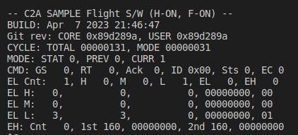

How to integrate C2A
1. Overview
- C2A (Command Centric Architecture) is an architecture for spacecraft flight software developed by ISSL.
- S2E can execute C2A as flight software for onboard algorithm development and debugging.
- This document describes how to integrate the C2A within S2E.
- Notes
- C2A is written in C language, but S2E builds C2A as C++.
- The supported version of this document
- Please confirm that the version of the documents and s2e-core are compatible.
2. Overview of C2A execution in S2E
- Directory Construction
- Make
FlightSWdirectory at same directory withs2e-coreands2e-user. - Make a
c2a-userdirectory inFlightSWand set the C2A source code you want to use.├─ FlightSW │ └─ c2a-user │ └─ src_user │ └─ src_core └─ s2e-user-example ├─ s2e-core └─ ExtLibraries - Edit
s2e-user/CMakeLists.txtas follows.set(C2A_NAME "c2a_oss")- Edit the directory name
c2a_ossaccording to your situation. - In the case of the above directory structure, you need to edit as
c2a-user
- Edit the directory name
option(USE_C2A "Use C2A" OFF)- Turn on the
USE_C2Aflag asoption(USE_C2A "Use C2A" ON)
- Turn on the
- Make
- Notes
- In the default setting of S2E, C2A is built but isn't executed. To execute the C2A, users need to add an onboard computer, which can execute the C2A.
- The
s2e-corehas the ObcWithC2a class as a component, and users can use it to execute the C2A. - Users can use the
ObcWithC2aclass in theUserComponentsclass, the same as other components.
- Build the
s2e_user- Note: When you add new source files in the C2A, you need to modify the
c2a-user/CMakeLists.txtto compile them in the S2E. - Users can choose the construction of CMake as users need. For example, the sample codes have several
CMakeLists.txtfiles in each directory to set the compile targets, so users need to modify them to add the target source codes.
- Note: When you add new source files in the C2A, you need to modify the
3. How to build C2A in S2E with the sample codes
-
Sample codes
- A sample of s2e-user: s2e-user-example/sample/how-to-integrate-c2a
- A sample of c2a-user: C2A minimum user in
c2a-core.
-
Preparing development environment
-
Clone the
s2e-user-exampleand switch the branch tosample/how-to-integrate-c2a. -
Make
FlightSWdirectory at same directory withs2e-core. -
Clone
c2a-core v3.8.0in theFlightSWdirectory. -
Execute setup script
- Mac or Linux Users:
c2a-core/setup.sh - Windows Users:
c2a-core/setup.bat
- Mac or Linux Users:
-
Open
s2e-user-for-c2a-core/CMakeLists.txtand editset(C2A_NAME "c2a_sample")toset(C2A_NAME "c2a-core/Examples/minimum_user") -
For users who don't use Windows
- open
c2a-core/Examples/minimum_user/CMakeLists.txtand editoption(USE_SCI_COM_WINGS "Use SCI_COM_WINGS" ON)tooption(USE_SCI_COM_WINGS "Use SCI_COM_WINGS" OFF) - This setting turns off the feature to communicate with WINGS ground station. Currently, this feature is available only for Windows users.
- open
-
Please check the following directory construction
├─ FlightSW │ └─ c2a-core │ └─ Examples │ └─ minimum_user └─ s2e-user-example ├─ s2e-core └─ ExtLibraries -
Build and execute the
s2e-user-example. -
Users can see the following output in a terminal. The
CYCLE: TOTALvalue is incremented.
-
4. Communication between C2A and S2E for SILS test
- Generally, communication between flight software and S2E is executed via
OnBoardComputerclass. - The
OnBoardComputerclass has communication ports and communication functions. Other components and flight software can use the communication functions to communicate each other. - For C2A, the
ObcWithC2ahas the following functions for C2A flight software. The driver functions in the flight software can use these functions. It is essential to use the sameport_idwith the component setting in S2E. The details are described in specification documents for each feature.- Serial communication functions
int OBC_C2A_SendFromObc(int port_id, unsigned char* buffer, int offset, int count); int OBC_C2A_ReceivedByObc(int port_id, unsigned char* buffer, int offset, int count); - I2C communication functions
int OBC_C2A_I2cWriteCommand(int port_id, const unsigned char i2c_addr, const unsigned char* data, const unsigned char len); int OBC_C2A_I2cWriteRegister(int port_id, const unsigned char i2c_addr, const unsigned char* data, const unsigned char len); int OBC_C2A_I2cReadRegister(int port_id, const unsigned char i2c_addr, unsigned char* data, const unsigned char len); - GPIO
int OBC_C2A_GpioWrite(int port_id, const bool is_high); bool OBC_C2A_GpioRead(int port_id);
- Serial communication functions
- Currently, the C2A uses the wrapper functions in IfWrapper/Sils. The functions automatically overload the normal IfWrapper functions when C2A is executed on the S2E.
- Other interfaces like SPI, etc., will be implemented.
5. Example of S2E-C2A communication
-
This section shows an example of communication between a component in S2E and an application in C2A.
-
The sample codes
-
Preparation
- See
Ch. 3 How to build C2A in S2E with the sample codes.
- See
-
Modification of the S2E side
- Users can use the ExampleSerialCommunicationWithObc class in
s2e-coreas a test component to communicate with C2A. - Please refer the sample codes in s2e-user-example/sample/how-to-integrate-c2a.
- Add
ExampleSerialCommunicationWithObcas a component inuser_components.cpp and .hpp.- In this example, the
ObcWithC2ais executed as 1kHz, and theExampleSerialCommunicationWithObcis executed as 1Hz.
- In this example, the
- Users can use the ExampleSerialCommunicationWithObc class in
-
Modification of the C2A side
- Please refer the sample codes in
Tutorials/SampleCodes/c2a_integration/c2a_src_user.- The directory structure of
c2a_src_useris the same with that ofc2a-core/Examples/minimum_user/src/src_user.
- The directory structure of
- We need to add a new driver instance application to communicate with the
ExampleSerialCommunicationWithObccomponent.- Copy
Application/DriverInstances/di_s2e_uart_test.c and .h - Edit
CMakeLists.txtin the Application directory to adddi_s2e_uart_test.cas a compile target.
- Copy
- Edit
app_registry.c, handapp_headers.hin theApplicationdirectory to register the applications ofdi_s2e_uart_test.- We have two applications
AR_DI_S2E_UART_TESTandAR_DI_DBG_S2E_UART_TEST.
- We have two applications
- Edit
Setting/Modes/TaskLists/Elements/tl_elem_drivers_update.cto add theAR_DI_S2E_UART_TESTto execute the application in the tasklist. - Edit
Setting/Modes/TaskLists/Elements/tl_elem_debug_display.cto add theAR_DI_DBG_S2E_UART_TESTto execute the application in the tasklist.
- Please refer the sample codes in
-
Execution and Result
-
The C2A's
AR_DI_S2E_UART_TESTapplication sends characters to the S2E'sExampleSerialCommunicationWithObccomponent likeSETA, SETB, SETC, ..., SETZ, SETA -
The
ExampleSerialCommunicationWithObccomponent receives the characters and stores the set characters likeA, B, C, ..., Z, A -
The
ExampleSerialCommunicationWithObccomponent sends the stored characters as telemetry likeA, BA, CBA, ..., ZYX -
The
AR_DI_S2E_UART_TESTapplication receives the telemetry, and theAR_DI_DBG_S2E_UART_TESTapplication prints the first three characters in the debug output console like the following figure.
-